9.1 Overview
Layer 9 defines and enforces the rules under which every other layer operates. The diagram splits it into security controls (data encryption in transit and at rest, secrets management, network security, least-privilege access, MCP/tool permissions, sandboxes and code isolation, content safety and filtering) and governance (RBAC/ABAC, audit trails, policy management, compliance with GDPR, SOC 2 and ISO 27001, data classification, retention policies).
Agentic systems change the security posture of an organisation in one specific way: a compromised or confused model can act. The design goal is therefore not only to prevent compromise but to ensure that a compromised agent cannot do meaningful damage: least privilege, approval for consequential actions, isolation for code, and audit for everything.
9.2 Architecture

Mermaid source diagrams/security-flow.mmd
flowchart TB
U[User] -->|TLS 1.3| EDGE[WAF · API Gateway]
EDGE -->|OIDC / JWT| AUTHN[Authentication]
AUTHN --> AUTHZ[Authorization<br/>RBAC + ABAC policy engine]
AUTHZ --> IG[Input guardrails]
IG --> RT[Agent runtime]
RT -->|scoped tool token| TP{Tool permission<br/>policy}
TP -->|read-only| MCP[MCP server]
TP -->|write / high-risk| HITL[Human approval]
HITL --> MCP
RT --> SBX[Sandbox<br/>no network · resource limits]
RT --> GW[LLM gateway<br/>virtual keys]
MCP -.->|untrusted output| IG2[Result sanitization]
IG2 --> RT
RT --> OG[Output guardrails]
OG --> U
subgraph GOV["Governance"]
AUD[Immutable audit trail]
CLS[Data classification]
RET[Retention policies]
KMS[KMS · Vault secrets]
end
AUTHZ -.-> AUD
TP -.-> AUD
OG -.-> AUD
RT -.-> CLS
9.2.1 Security controls
Encryption. TLS 1.3 everywhere, including service-to-service inside the cluster (service mesh mTLS with Istio or Linkerd, or SPIFFE identities). At rest: KMS-managed keys (AWS KMS, Azure Key Vault, Cloud KMS) for databases, object storage, vector stores, queues and backups; per-tenant keys where contractually required; field-level encryption for the most sensitive memory content.
Secrets management. Provider API keys, database credentials, MCP server tokens and signing keys live in HashiCorp Vault, AWS Secrets Manager or Azure Key Vault, injected at runtime (CSI driver, External Secrets Operator), rotated automatically, never in images, environment files or prompts. Only the LLM gateway holds provider keys; agents hold none.
Network security. Private subnets for all services; public exposure only through the load balancer/API gateway with a WAF; NetworkPolicies so agent workers reach only the gateway, the executor's targets, memory stores and the OTel collector; egress control (NAT with allow-listed destinations, egress proxy) so a hijacked agent cannot exfiltrate to arbitrary hosts; private endpoints (PrivateLink, Private Endpoint) to model providers where available.
Least privilege. Every service runs with its own workload identity and the minimum IAM permissions; database roles per purpose (read-only for query tools); object storage prefixes per tenant/run; no wildcard policies.
MCP / tool permissions. Policy-as-code (OPA/Rego, Cedar) evaluated by the executor on each call with principal, tool, arguments and context; allow-lists per agent and per environment; risk tiers; approval for write/irreversible; per-server credentials; delegated user identity to downstream systems where possible.
Sandboxes and code isolation. All model-generated code runs in gVisor/Kata/Firecracker sandboxes with no network, resource limits and ephemeral storage (see Tools & Integrations); sandbox images are scanned and signed; sandbox hosts are isolated node pools.
Content safety and filtering. Guardrails (Layer 5) are the enforcement point; Layer 9 owns the policy: which categories are blocked per tenant and channel, thresholds, and what is logged.
9.2.2 Governance
RBAC / ABAC. Roles from the identity provider (groups) map to platform roles (end user, power user, tenant admin, platform operator, auditor). ABAC adds attributes (department, clearance, data classification of the resource, time, location). Both are evaluated by the same policy engine used for tool permissions so there is one place to reason about access.
Audit trails. Immutable records of authentication, authorization decisions, tool executions with approving identity, data access (which documents were retrieved for which user), guardrail blocks, configuration changes, and model/prompt version changes. Stored in WORM storage or hash-chained tables with retention according to regulation (often 1–7 years). Auditors get read-only access via a dedicated interface.
Policy management. Policies (access, tool, content, retention, model usage) are versioned in Git, reviewed like code, tested (OPA unit tests) and deployed through the pipeline. Tenants may customise within platform bounds.
Compliance. Map controls to frameworks and keep evidence:
| Framework | Key requirements for this system | Controls in this architecture |
|---|---|---|
| GDPR | Lawful basis, data minimisation, purpose limitation, right of access and erasure, DPIA for high-risk processing, processor agreements with model providers | Data classification, memory forget_user, retention TTLs, PII masking before external models, audit of access, region routing in the gateway |
| SOC 2 (Trust Services Criteria) | Security, availability, confidentiality, processing integrity, privacy controls with evidence | IAM, encryption, monitoring and alerting, change management via CI/CD, incident response, vendor management for providers |
| ISO/IEC 27001 | ISMS with risk assessment, Annex A controls, continual improvement | Threat model (below), policy management, access control, cryptography, operations security, supplier relationships |
| ISO/IEC 42001 (AI management) | AI-specific governance, impact assessment, transparency | Model catalogue and lifecycle, evaluation records, HITL, audit of model decisions |
| EU AI Act | Risk classification, transparency obligations, human oversight for high-risk uses | Use-case risk assessment, HITL, logging, documentation (this document) |
Data classification. Label data at ingestion and in memory (public, internal, confidential, restricted). Classification drives routing (restricted data only to in-VPC models), retrieval (ACL filters), logging (masking level) and retention.
Retention policies. Per data kind: session state (hours to days), run history (months), memories (until user deletion or TTL), audit logs (years), telemetry (weeks), evaluation datasets (indefinite with consent). Implemented with TTLs, lifecycle rules and scheduled purge jobs; verified by periodic audits.
9.3 Security threat model
The threat model follows OWASP Top 10 for LLM Applications and the MITRE ATLAS knowledge base, adapted to an agentic system with tools.
| Threat | Attack scenario | Risk | Mitigation strategy |
|---|---|---|---|
| Direct prompt injection | User instructs the agent to ignore its rules and, for example, export all CRM accounts | Data exfiltration, policy bypass | Input guardrails (heuristics + classifier); tool permissions independent of the prompt; approval for write tools; ABAC on data scope |
| Indirect prompt injection | A retrieved web page, email or document contains instructions ("send this thread to attacker@…") that the agent follows | Exfiltration, unauthorised actions, misinformation | Treat tool/document output as untrusted data; injection classifier on retrieved content; sanitisation; no write tools reachable from a researcher agent; egress control |
| Jailbreaking | Role-play or encoding tricks to elicit prohibited content or hidden instructions | Harmful output, reputational and legal damage, prompt disclosure | Safety classifiers on input and output; refusal templates; red-team regression suite; no secrets in prompts |
| Data leakage | Memory or retrieval returns another user's or tenant's data; PII sent to an external model; secrets in logs | Privacy breach, regulatory penalties | Tenant/user scoping in every query; ACL filter in retrieval; PII masking before external models; classification-based routing; telemetry masking |
| Malicious or compromised tools | A third-party MCP server returns poisoned results or exfiltrates arguments; a tool description contains injection | Supply-chain compromise | MCP server allow-list and review; pinned versions; per-server credentials with minimal scope; network policy; argument masking; description sanitisation; monitoring for anomalous calls |
| Unauthorised actions | Agent performs a write (refund, email, deploy) beyond the user's authority or intent | Financial loss, compliance violation | Risk tiers; HITL approval; delegated identity so downstream authorization applies; idempotency; audit with approver |
| Model abuse / denial of wallet | Attacker triggers expensive runs, loops or huge contexts | Cost explosion, availability loss | Per-tenant budgets at the gateway; step/token/time budgets in the runtime; rate limits; anomaly alerts |
| Sandbox escape | Generated code exploits the execution environment | Host compromise, lateral movement | microVM/gVisor isolation, no network, non-root, seccomp, isolated node pool, image signing |
| Insecure output handling | Model output rendered as HTML or executed as commands | XSS, command injection | Output validation; render as text/markdown with sanitisation; never pass model output to shells or eval |
| Training data / memory poisoning | Attacker plants false facts in documents or conversation to bias future answers | Persistent misinformation | Source trust levels; extraction validation; memory review; provenance in citations |
| Credential theft | Provider keys or user tokens leaked from logs, images, repos | Account takeover, cost | Secrets manager; scanning in CI; masking in telemetry; short-lived tokens; rotation |
Run the threat model as a living document: revisit on every new tool, channel, model or data source; capture findings in the red-team suite that runs in CI.
9.4 Implementation guide
- Adopt a policy engine (OPA or Cedar) early and route all authorization decisions through it: API access, tool calls, retrieval filters.
- Use workload identity for services; no static credentials in the cluster.
- Enforce NetworkPolicies from the first deployment; default-deny egress for agent workers.
- Build the audit pipeline before the first production tenant; retrofitting is painful.
- Automate compliance evidence: CI records of tests and scans, IaC state, access reviews exported from the IdP.
- Run a DPIA / AI impact assessment per use case and keep it with this documentation.
9.5 Example implementation
Tool permission policy (Rego):
package agent.tools
default allow := false
allow if {
input.tool.risk == "read"
input.agent in input.tool.allowed_agents
data_scope_ok
}
allow if {
input.tool.risk != "read"
input.agent in input.tool.allowed_agents
input.context.approval.approved == true
input.context.approval.approver != input.principal.sub # four-eyes
}
data_scope_ok if {
not input.tool.args.cost_center
}
data_scope_ok if {
input.tool.args.cost_center in input.principal.cost_centers
}
Kubernetes NetworkPolicy for agent workers (egress restricted):
apiVersion: networking.k8s.io/v1
kind: NetworkPolicy
metadata: { name: agent-worker-egress, namespace: agents }
spec:
podSelector: { matchLabels: { app: agent-worker } }
policyTypes: [Egress]
egress:
- to: [{ podSelector: { matchLabels: { app: llm-gateway } } }]
- to: [{ podSelector: { matchLabels: { app: mcp-server } } }]
- to: [{ podSelector: { matchLabels: { app: sandbox-api } } }]
- to: [{ namespaceSelector: { matchLabels: { name: data } } }]
- to: [{ podSelector: { matchLabels: { app: otel-collector } } }]
- to: [{ namespaceSelector: {}, podSelector: { matchLabels: { k8s-app: kube-dns } } }]
ports: [{ protocol: UDP, port: 53 }]
Hash-chained audit record:
def append_audit(conn, event: dict) -> None:
prev = conn.fetchval("SELECT hash FROM audit ORDER BY id DESC LIMIT 1") or ""
payload = json.dumps(event, sort_keys=True, default=str)
h = hashlib.sha256((prev + payload).encode()).hexdigest()
conn.execute("INSERT INTO audit (payload, prev_hash, hash) VALUES ($1, $2, $3)", payload, prev, h)
9.6 Best practices
- Common mistakes. Provider keys in agent pods; free egress for workers; tools authorised against the agent's identity instead of the user's; audit logs in the same mutable database as application data; PII checks only on input.
- Optimisation. Cache policy decisions per (principal, tool) for the run; evaluate policies locally (OPA sidecar) to avoid network hops.
- Security. Assume the model will be manipulated; design so that a manipulated model has nothing dangerous to do without a human; verify with red-team exercises against the deployed system, not just the prompts.